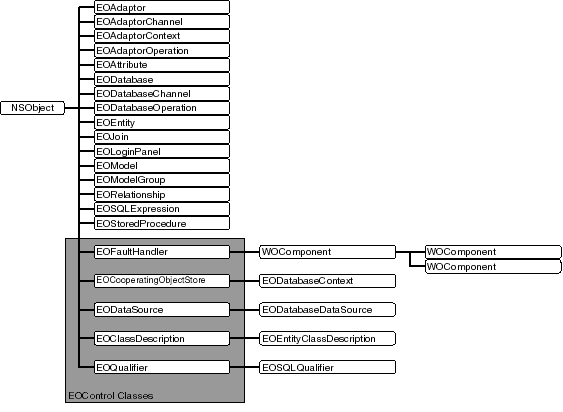

Introduction
The EOAccess framework is one of a group of frameworks known collectively as the Enterprise Objects Framework. The classes and interfaces that make up the EOAccess framework allow your applications to interact with database servers at a high level of abstraction. These classes make up what is known as the access layer. The access layer is divided into two main parts:
EOAccess Framework Class Hierarchy
The EOAccess class hierarchy is rooted in the Foundation Framework's NSObject class (see Figure 1). The remainder of the EOAccess Framework consists of several related groups of classes, a few miscellaneous classes, and a number of interfaces.
Figure 1 The EOAccess Framework class hierarchy 
The Database Level
The database level is where enterprise objects are created from the dictionaries retreived by the adaptor level. It's also where snapshotting is performed. The database level is primarily made up of the following classes:
EODatabase is a class that represents a single database server.
EODatabaseChannel is a class that represents an independent communication channel to the database server.
EODatabaseContext is subclass of EOObjectStore for accessing relational databases, creating and saving objects based on EOEntity definitions in an EOModel.
EODatabaseOperation is a class that represents an operation-insert, update, or delete-to perform on an enterprise object and all the necessary information required to perform the operation.
EOAdaptor is an abstract class that provides concrete subclasses with a structure for connecting to a database.
EOAdaptorChannel is an abstract class that provides its concrete subclasses with a structure for performing database operations.
EOAdaptorContext is an abstract class that defines transaction handling in Enterprise Objects Framework applications.
EOAdaptorOperation is a class that represents a primitive operation in a database server and all the necessary information required by the operation.
EOAttribute is a class that represents a column, field or property in a database, and associates an internal name with an external name or expression by which the property is known to the database.
EOEntity is a class that describes a table in a database and associates a name internal to the Framework with an external name by which the table is known to the database.
EOJoin is a class that describes one source-destination attribute pair for an EORelationship.
EOModel is a class that represents a mapping between a database schema and a set of classes based on the entity-relationship model.
EOModelGroup is a class that represents an aggregation of related models.
EORelationship is a class that describes an association between two entities, based on attributes of those two entities.
EOAccessArrayFaultHandler is a subclass of EOAccessGenericFaultHandler that implements a fault for an array of enterprise objects.
EOAccessFaultHandler is a subclass of EOAccessGenericFaultHandler that implements an object fault for enterprise objects.
EOAccessGenericFaultHandler is an abstract class that helps an EOAccessFault to fire by fetching data using an EODatabaseContext.
Additions to Other Frameworks
The EOAccess framework adds methods to a number of classes in different frameworks:
EOGenericRecord Additions adds one method to the control layer's class, for returning a generic record's associated EOEntity.
EOObjectStoreCoordinator Additions adds two methods to the EOControl class for accessing the coordinator's EOModelGroup.
EOQualifier Additions adds one method to the class, for "rerooting" a qualifier to another entity.
NSString Additions adds two methods to the class, to convert modeling object names to database schema names, and database schema names to modeling object names
Miscellaneous Classes
The EOAccess framework also has a number of other useful classes, including:
EODatabaseDataSource is a concrete subclass of EODataSource that fetches objects based on an EOModel, using an EODatabaseContext that services the data source's EOEditingContext.
EOEntityClassDescription is a subclass of the control layer's EOClassDescription and extends the behavior of enterprise objects by deriving information about them from an associated EOModel.
EOLoginPanel is an abstract class that defines how users provide database login information.
EOSQLExpression is an abstract superclass that defines how to build SQL statements for adaptor channels.
EOSQLQualifier is a subclass of EOQualifier that contains unstructured text that can be transformed into an SQL expression.
EOStoredProcedure is a class that represents a stored procedure defined in a database, and associates a name internal to EOF with an external name known to the database.
EOAdaptorChannel delegate receives messages for nearly every operation that would affect data in the database server, and it can preempt, modify, or track these operations.
EOAdaptorContext delegate receives messages for any transaction begin, commit, or rollback, and it can preempt, modify, or track these operations.
EOAdaptor delegate implements a method that can perform a database-specific transformations on a value.
EODatabaseContext delegate can intervene when objects are created and when they're fetched from the database.
EOModelGroupClass delegate implements a method that returns the default model group.
EOModelGroup delegate influences how the model group finds and loads models.
EOCustomClassArchiving is an informal protocol that defines methods that can write any object that conforms to NSCoding to the database as binary data, as generated by NSArchiver.
EOUtilities is a collection of convenience methods intended to make common operations with EOF easier.
EOPropertyListEncoding declares methods that read and write objects to property lists.
EOQualifierSQLGeneration declares two methods that are adopted by qualifier classes to qualify fetches from a database.